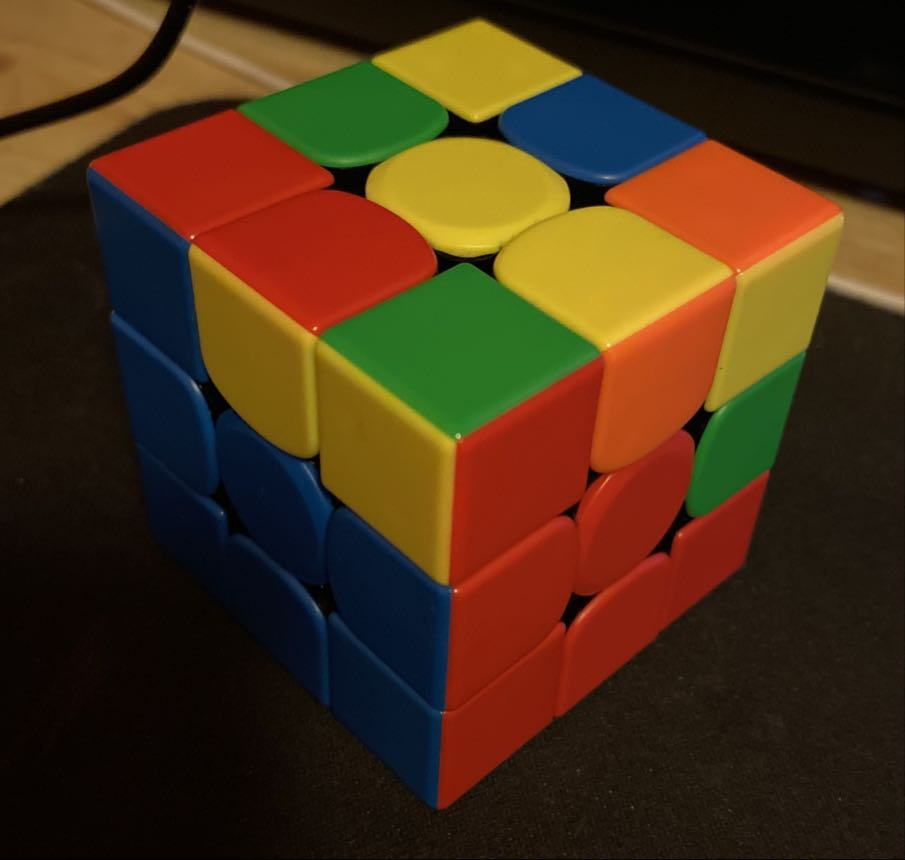

The White Cross
Hold the cube with the white face on top and yellow on bottom
Search for the white edges
5
Edges have 2 sides, while corners have 3 sides
There are many combinations but with the basic notations and algorithms, you should be able to do them alone
First 2 Layers
Instead of inserting the edges, we'll now insert the corners
There are 3 possible situations:
If the edge is on the other side, just do L instead of R
(last one is on the bottom)
R' D' R D' R' D R D' R' D R R' D' R then use the first algorithm
When done, it should be like in the photo on the side
Now we'll focus on the second layer
Turn the cube upside down and start looking for matches
(no matches in last photo)
First posibility: Green on bottom with orange on top. Do U U2 then hold green side in front with yellow on top R U' R' U' F' U F
Second posibility: First photo but L variant instead of R
Third posibility: Yellow bottom with orange top. Match it with the corresponding color, this case is orange. Do U', hold green side in front L' U L U F' U' F
When done, it should look like the photo on the side
Orientation of the Last Layer
OLL focuses on completing the yellow face
There are many algorithms but we'll only use 3
F R U R' U' F' and you should get a yellow cross. If that's not the case repeat the step, doesn't matter how the yellow pieces are placed
First photo: L U' L' U' L U U L'
Second photo: R U R' U R U' U' R'
Third photo: Use algorithm from second photo
You should now have something like the photo on the side
Permutation of the Last Layer
PLL is the last step to solve a Rubik's cube
We are changing the position of the corners, edges don't matter right now
There are 3 algorithms
For the corners: R U U R' U' R U U L' U R' U' L and L' U' U' L U L' U' U' R U' L U R'
If your cube looks like in the photos, grab the opposite face of the completed face (in this case it's green, so we'll grab blue)
R R U R U R' U' R' U' R' U R' (repeat if not complete)
Congratulations! You have completed a Rubik's Cube for the first time now